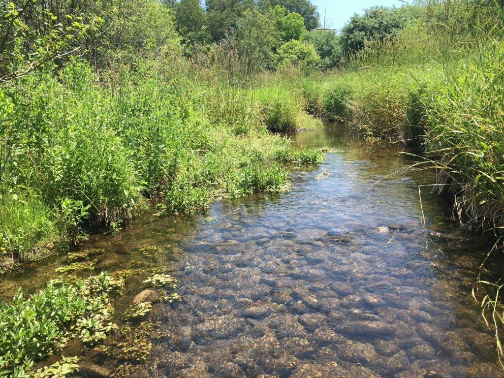
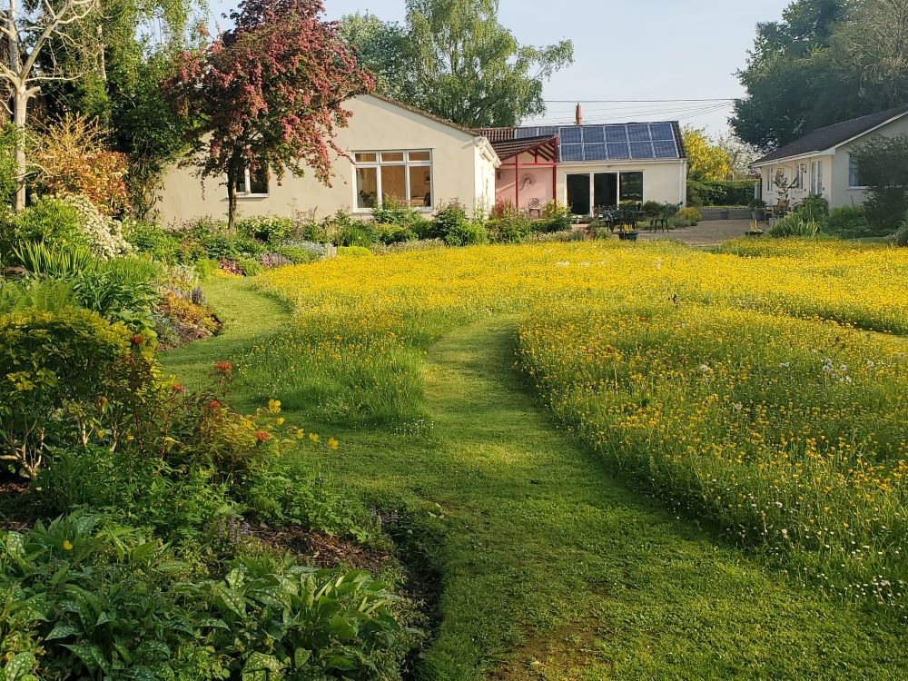
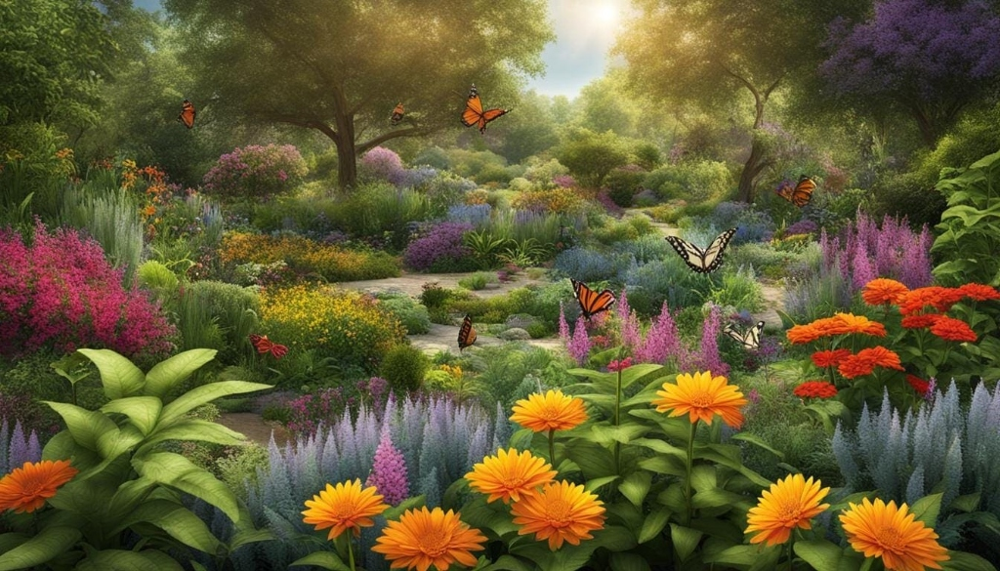
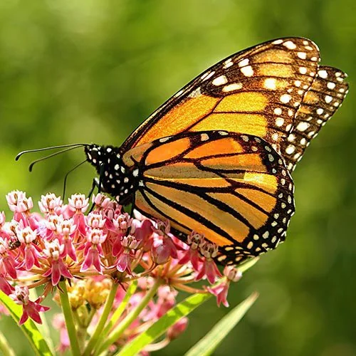
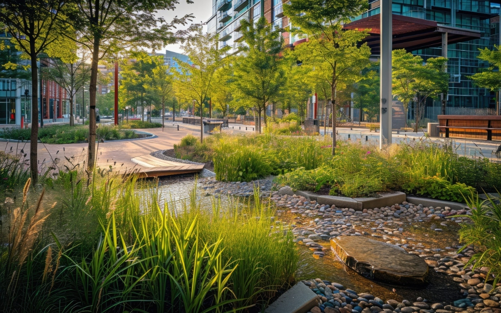
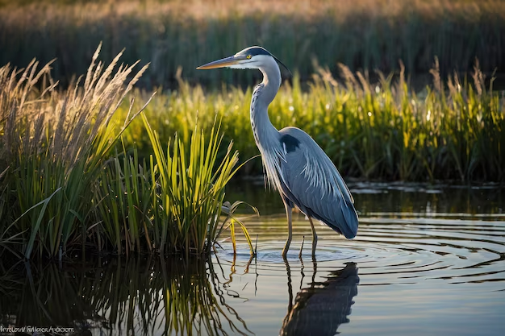

Restoration Project Gallery
Field-proven ecological transformations across private landholdings, riparian corridors, public nature preserves, and conservation estates.
Featured Habitat Projects
High-impact restorations illustrating native biodiversity recovery, erosion mitigation, and living soil revival.

Cedar Creek Stream Bank Corridor
Stabilized 2,400 linear feet of agricultural drainage with deep-root native dogwoods, sedges, and emergent rushes.

Pine Ridge Meadow Conversion
Converted a continuous-mow commercial turf parcel into a 42-species native meadow with zero supplemental watering.
Blue Heron Stormwater Basin
Engineered functional freshwater marsh wetland absorbing peak 100-year storm pulses while hosting amphibious fauna.
Empirical Habitat Recovery Benchmarks
Quantitative biological data captured across 500+ restored acres over 5-year post-establishment monitoring cycles.

5-Year Ecological Recovery & Biological Yields
Quantitative multi-year telemetry captured across restored regional matrices, verifying rapid stormwater infiltration gains, elimination of agricultural runoff, and dramatic recolonization by native pollinators.
Regional Restoration Case Studies
Documented perennial transformations across stream corridors, native prairies, and urban conservation estates.

Cedar Creek Stream Bank
Live stake bioengineering with native willow and silky dogwood for active bank stabilization.

Pine Ridge Native Meadow
28-acre conservation seed drill with warm-season grasses and continuous summer nectar forbs.

Highland Monarch Waystation
High-density installation of 4 milkweed species and late autumn goldenrods along migratory ridge lines.

Heritage Oak Savanna
Eradication of invasive buckthorn under mature 150-year-old bur oaks, replanted with shade sedges.

Municipal Center Bioswale
Urban infiltration bioswale handling 100% of parking lot stormwater runoff through bioretention soils.

Blue Heron Marsh Basin
Sediment filtering wetland ringed with buttonbush and blue flag iris providing bird sanctuary.
Featured Project Spotlight
A closer look at the botanical strategies and measured results of the Cedar Creek Restoration.

Cedar Creek Riparian Transformation
The Challenge: Intensive agricultural row-cropping adjacent to the stream bank had triggered severe shear erosion, shedding tons of topsoil into the trout watershed annually and collapsing downstream aquatic insect populations.
Our Approach: We graded severe embankments to a stable 3:1 slope, stabilized soils with biodegradable coir fiber logs, and installed 4,500 bare-root live stakes of Red Osier Dogwood (Cornus sericea) and Pussy Willow (Salix discolor), backed by deep-rooting tussock sedge plugs.